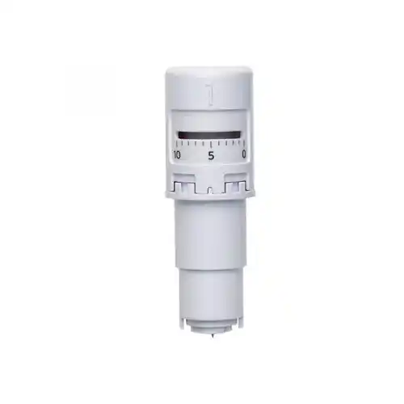
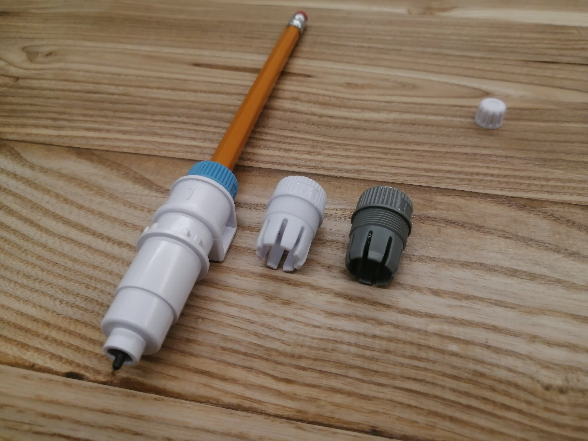
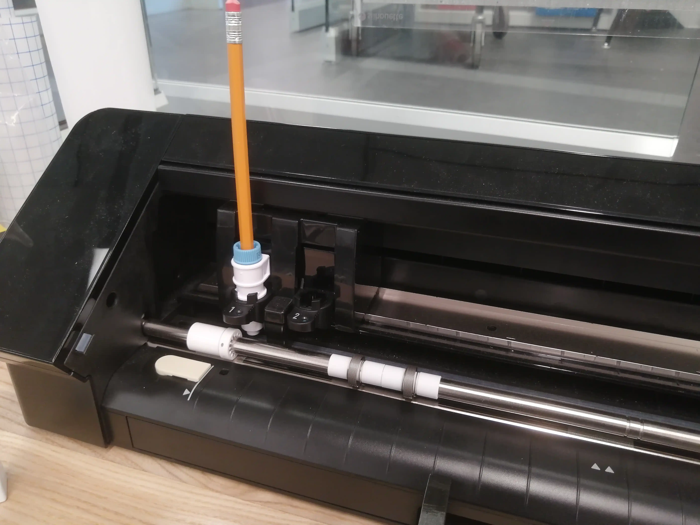

Silhouette Cameo 4
Guide de découpe avec Silhouette Studio¶
Ce guide se veut être un rappel de l’utilisation du logiciel Silhouette Studio en vue de découper du vinyle.
- Lancer le logiciel, s’il n’y a pas de raccourci sur le bureau, cliquez sur la loupe et cherchez Silhouette studio.
- Cliquez sur la première icône de la colonne de droite (1). Puis sur la première icône de Mise en page (2).
- Pour Machine, choisissez Caméo.
- Pour Tapis de coupe, choisissez la dimension du tapis de coupe que vous utiliserez (12x12 ou 12x24 pouces).
- Pour Taille des médias, choisissez Auto.
- Cochez Constrain Media to Cutting Mat.
- Cochez Afficher les limites de découpe.
{kind=link}
- Cliquez sur Fichier > Ouvrir, ou glissez votre image au format PNG pour l’ouvrir dans le logiciel. Cliquez sur un coin de la sélection pour redimensionner l’image. Cliquez sur l’image pour la déplacer.
{kind=link}
- Cliquez sur Envoyer (1) pour aller dans le menu de découpe.
- Choisissez le matériau Vinyle Oracal 651 (2). Si la découpeuse n’est pas démarrée, vous verrez un écran semblable.
{kind=link}
Démarrez la découpeuse (1) et démarrez le Bluetooth (2) (le bouton doit être bleu).
{kind=link}
- La sélection Auto (Découper) (1), ainsi que la lame AutoLame (détecté) (2) devrait être automatique. Mettez la roulette sur 4, la force à 10, et la vitesse à 2 (3). La découpeuse indique qu’elle est prête à être chargée (4). Coupez un morceau de vinyle et placez-le sur le tapis de coupe. Chargez-le dans la découpeuse. Cliquez sur Envoyez (5) pour lancer la découpe.
Note
Si le Bluetooth ne fonctionne pas, un câble USB est déjà branché à la découpeuse vinyle. Télécharger le logiciel SilhouetteStudio sur votre propre ordinateur, puis branchez le à la découpeuse vinyle.
{kind=link}
Lors du chargement du vinyle, assurez-vous que la partie encerclé en rouge (1) soit placée à l’extrémité du tapis de coupe et que la partie noire soit tournée vers le haut. Puis appuyez sur la flèche montante (2) pour charger le vinyle. Appuyez sur l’autre flèche pour décharger le vinyle. Accotez le tapis de coupe au guide en plastique qui se trouve sur la gauche alignée au trait blanc, afin que le tapis de coupe soit bien droit.
{kind=link}
Vous pouvez mettre pause à tout moment en appuyant sur le bouton Pause en cas de mal fonction.
{kind=link}
Retirez les parties qui ne doivent pas être collées, puis collez le papier transfert sur le vinyle. Assurez-vous qu’il n’y a pas de bulle et passant plusieurs fois le grattoir.
Note
Pensez à conserver les retailles de vinyle et de papier transfert, cela peut être utilisé pour d’autres projets!
{kind=link}
Retirez le papier transfert avec le vinyle collé dessus. Puis collez-le où vous le souhaitez. Passez le grattoir pour enlever les bulles et pour que le vinyle soit bien collé à la surface.
{kind=link}
Retirez le papier transfert doucement et le roulant vers l’extérieur. Tadam !
{kind=link}
Paramètres de découpe¶
Note
Les paramètres de découpe sont à titre indicatif. Ils peuvent varier selon le type de vinyle, la taille de la découpe, etc.
| Matériau | Type de lame | Profondeur | Force | Vitesse | Passage |
|---|---|---|---|---|---|
| Vinyle permanent | Auto Lame | 4 | 10 | 2 | 1 |
| Acétate | Auto Lame | 4 | 10 | 3 | 1 |
| Gravure | Pointe de gravure | / | 22 | 2 | 2 |
Lames et outils¶
Les lames¶
Auto Lame¶
 Utilisée pour les coupes standard, la profondeur de coupe se règle sur le logiciel SilhouetteStudio et aucune manipulation directe n’est nécessaire. Cette lame peut couper les matériaux fins comme le vinyle, le papier d’imprimante, l’acétate, le papier cartonné, etc.
{kind=link}
Cette lame doit être insérée dans le chariot numéro 1.
Lame rotative¶
{kind=link}
Utilisée pour les coupes difficiles et les matériaux épais. La lame est protégée par une partie plastique qui doit être vissée vers le haut pour libérer la lame. Cette lame peut couper les matériaux difficiles comme le tissu, la feutrine, etc. Pour ces types de matériaux, il est fortement recommandé d’utiliser un tapis de coupe à forte adhérence.
Cette lame doit être insérée dans le chariot numéro 2.
Les outils¶
Adaptateur pour stylo Silhouette¶
{kind=link}
L’adaptateur bleu est utilisé pour les stylos Silhouette uniquement. Il doit être manipulé avec précaution, car le plastique qui le compose est fragile.
Cet outil doit être inséré dans le chariot numéro 1.
{kind=link}
Adaptateur pour crayon/stylo générique¶
 L’adaptateur permet d’utiliser des crayons et des stylos communs. Trois tailles d’embouts sont fournies pour s’adapter au mieux au diamètre du crayon utilisé.
{kind=link}
Ne forcez jamais pour insérer l’outil dans le chariot. Il est possible que la mine dépasse trop de l’outil ce qui empêche de bloquer le chariot. La mine doit à peine dépasser de l’outil.
Cet outil doit être inséré dans le chariot numéro 1. 
{kind=link}
Pointes de gravure¶
{kind=link}
-
Pointe large : Le bout aplati permet d’embosser les matériaux.
-
Pointe standard : La pointe permet de graver les matériaux.
-
Pointe fine : Permets de graver avec plus de précision pour des motifs qui nécessite plus de finesse.
L’outil de gravure permet d’embosser ou de graver différents matériaux (métaux, plexiglas, etc.) Le matériau doit avoir une épaisseur maximum de 3mm.
Pour assurer une bonne adhérence du matériau à graver, utilisez le tapis de coupe à forte adhérence. Nettoyez le tapis à l’aide d’un grattoir en plastique après utilisation.
Cet outil doit être inséré dans le chariot numéro 1.
{kind=link}